In this chapter, the four plugins of the Expert module are presented:
Automatic calibration of hydrological model parameters
Stochastic simulation
Time-slices simulation
Scenario simulation
6.1 Calibrator
The complexity of a hydrological model calibration increases with the number of parameters to calibrate. The search for optimal values of calibration parameters can be made manually to a reasonable number of parameters. But in general, for large basins including hundreds or thousands of parameters, it is essential to have an automatic calibration tool.
In RS MINERVE, an automatic calibration can be realized in the Calibrator tool (Figure 6.1).
- Click on Expert module and then on the Calibrator tool (Figure 6.1).
Calibration configuration
Different types of calibration can be achieved for an optimization:
Regular calibration: One or more zones with a unique downstream gauged station, calibrated with the same parameters for all zones.
Calibration per zone: One or more zones with a unique downstream gauged station, calibrated with different parameters per zones.
Regional calibration: One or more zones with several downstream gauged station, calibrated with the same parameters for all zones.
The creation of a new calibration configuration can be realized following next steps (corresponding to the black boxes in the Figure 6.1):
- In the Selection frame (Figure 6.1), select the object types to calibrate: press simultaneously Ctrl on keyboard and left click on the object types. Then define the corresponding zone(s) by clicking on the Zone Id number(s).
All the objects corresponding to the selected object types and zone(s) appear in the Models frame (Figure 6.1). The correspondent parameters are shown in the Parameters frame (Figure 6.1).
In the Parameters frame (Figure 6.1), select the parameters to calibrate. For each of them, define their minimum and maximum possible values (Min and Max columns) and the value to be used for the first iteration of the calibration (From model, Defined value or Random value).
If more than one zone has been selected (Selection frame), a column Values per zone appears in the table. For the parameter(s) selected for calibration, a box appears in this column. If the box is checked, the calibration for the parameter will consider a different value for each zone. If not, the same value will be considered for all zones in the concerned calibration.
Parameters can be imported in the model by clicking on 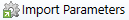 in the Parameters import/export frame (Figure 6.1).
In the Comparators frame (Figure 6.1), select the comparator(s) whose the observed variables (discharges or heights) will be used for the calibration (press simultaneously Ctrl on keyboard and left click on the comparators name to select more than one). If more than one comparator is selected, all will be taken into account in the objective function with the same weight.
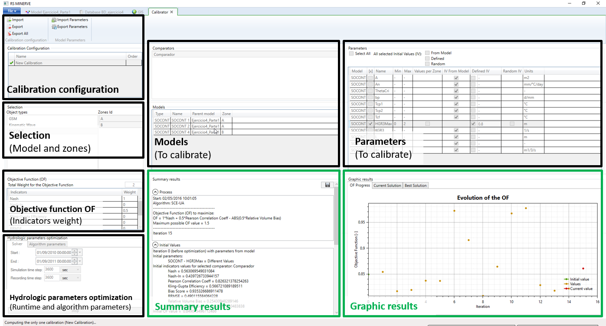
Define the weight of each indicator to determine the objective function in the Objective Functions (OF) frame. Its total weight appears in the cell at the top of the frame.
In the Solver tab of the Hydrologic parameters optimization frame (Figure 6.1), specify the calibration period and both Simulation and Recording time steps (Figure 6.2). The warm up period parameter defined for each comparator will be taken into account to initialize the state variables (as explained in the Technical manual).
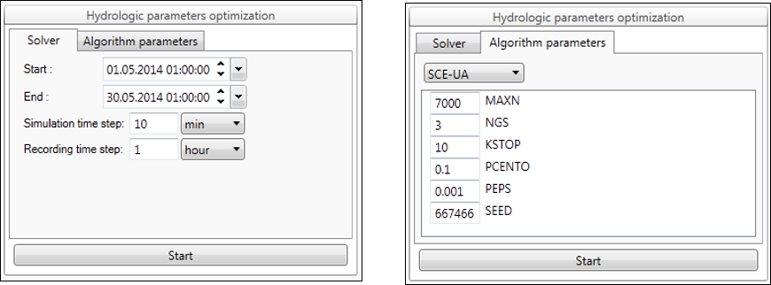
In the Algorithm parameters tab of this same frame, define the algorithm type (SCE-UA in the example of Figure 6.2) and the corresponding parameters.
Three different algorithms (Shuffled Complex Evolution – University of Arizona - SCE-UA and Uniform Adaptive Monte Carlo - UAMC and Coupled Latin Hypercube and Rosenbrock - CLHR) are available in the actual version. For more information, see RS MINERVE – Technical Manual.
The mouse fly above of each parameter name shows their description.
- Click on in the Calibration Configuration frame (Figure 6.1) to save the current calibration configuration. If you want to save the configuration for all the calibrations click on . The produced file can be imported for the next calibration test.
To import an existing configuration, click on in the Calibration Configuration frame (Figure 6.1) and load the file.
Calibration start/stop
- Click on in the Hydrologic parameters optimization frame to launch the calibration.
If the calibration configuration is valid, a “Start” message with the current date appears in the Process tab in the Summary Results frame. Otherwise, a red error message is displayed at the bottom of the Solver tab and describes the problem to resolve.
- To stop the calibration, click on in the Hydrologic parameters optimization frame. It takes a moment to stop until the current simulation ends.
Calibration results
After each simulation during the calibration, the following results are showed in the Summary Results frame (Figure 6.1 and Figure 6.3):
The Objective Function (OF), with its maximum possible value.
The results of the simulation before optimization with initial parameters, initial indicators values and initial OF value.
The results of the current iteration with its parameters values and the respective indicators values and OF value.
The best result, with related parameters and OF value.
These results can be exported at all times by saving with the Save button located in the same frame or by copying then pasting the text in a file.
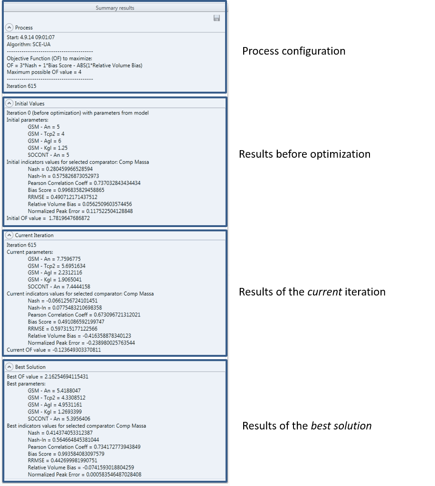
If more than one comparator has been selected in the Comparators frame, the Objective Function is equal to the sum of the objective functions obtained at each compactor.
The results of the calibration in progress can also be visualized as graphic form in the Graphic Results frame (Figure 6.1 and Figure 6.4):
The OF Progress tab shows the temporal evolution of the Objective Function (OF), with Initial value in green, current value in red and all other values in orange. The activation of the mouse wheel on vertical axis allows to zoom on the OF values of interest.
The Comparator tab allows following the progression of the current simulated variable (discharges or heights) with respect to the observed one. If more than one comparator had been selected for the calibration in the Comparators frame, the comparator to show can be modified by clicking on the one of interest in the same frame.
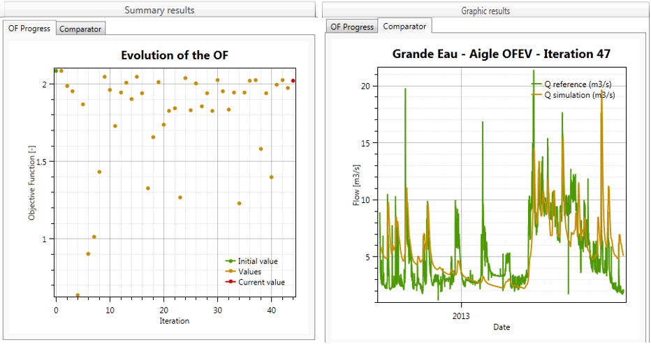
At the end of the calibration:
The parameters obtained for the best Objective Function value are applied in the current model. If the model is saved, the parameters are stored; if not, the hydrological model keeps the initial parameter values.
The parameters can be also exported in a file by clicking on in the Parameters import/export frame (Figure 6.1).
Multiple calibration
Additionally, in combination with all possible optimizations, multiple calibrations can be achieved:
Unconnected basins calibration: several independent basins can be calibrated if the same “order” is provided for all of them.
Upstream-downstream basins calibration: Different dependent basins can be calibrated from upstream to downstream (“order” grows up from upstream to downstream).
Parallel and series calibration can be combined for a complex basin as presented in example of Figure 6.5, where two unconnected basins are calibrated in Calibration A and Calibration B, then a downstream basin is calibrated in Calibration C and, finally, a more downstream basin is calibrated in Calibration D.
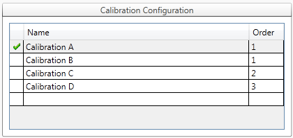
6.2 Scenario simulation
To evaluate the model sensitivity (i.e. the simulated flows) to the Initial Conditions, to the parameters and also to the meteorological inputs, it is necessary to run a lot of simulations to test different sets of values. But for the user it is very tedious to launch these many scenarios simulations.
In RS MINERVE, scenario’s simulations can be realized in the Scenario simulation tool.
- Click on the Expert module in the Toolbox frame (Figure 1) and then on the Scenario simulation (Figure 6.6).
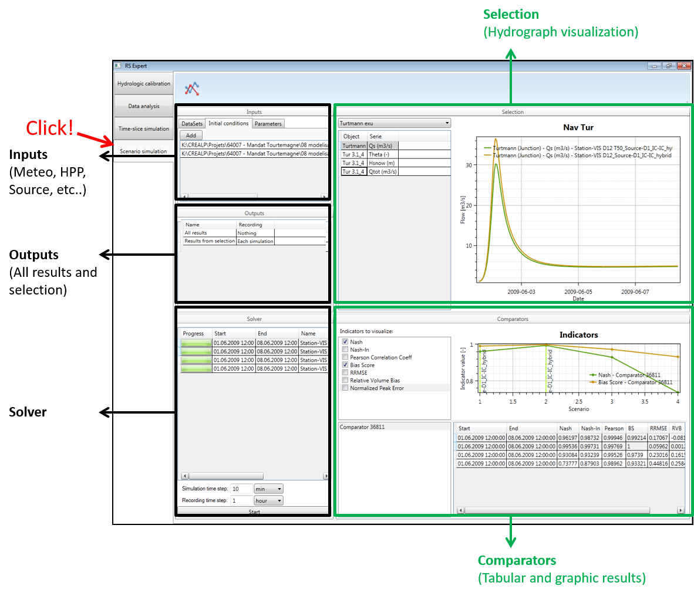
Scenarios configuration
A scenario is composed of a combination of input datasets (one for each type of Input data), a set of initial conditions and a set of parameters. Except the dataset for the Station input (meteorological inputs) when the model contains at least one Virtual weather station, all other inputs are optional. Initial conditions and parameters can be provided as text or worksheet files.
All possible combinations composed of every input type with at least one dataset or input file are proposed, but the user can erase undesired simulations.
The creation of a new scenarios configuration can be achieved following next steps (corresponding to the black boxes in Figure 6.14):
- In the Inputs frame (Figure 6.6), click on the DataSets tab (Figure 6.7). Select the dataset(s) to be used as data sources for the different Inputs: Station, TurbineDB, Source, Reservoir and Consumer (only object types existing in the model are listed). For example, for the Station data source, click on Station in the left part, search the corresponding dataset name(s) in the right part and check it/them.
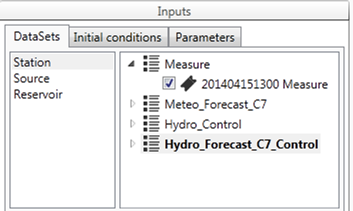
Click on the Initial conditions tab (Figure 6.7). If you want to add initial conditions (IC) file(s), click on 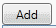 and import the desired IC files. The selected ones are listed in the Inputs frame.
Click on the Parameters tab (Figure 6.7). If you want to add parameters file(s), click on and import the desired parameters files. The selected ones are listed in the Inputs frame.
In the Selection frame (Figure 6.6), choose the model selection to be used.
Then, select the object’s series to be displayed.
The model selection is also used for the results exportation.
In the Outputs frame (Figure 6.6), define the outputs to be recorded: All results (all the simulation results of the model) and/or Results from selection (which considers only the above selected model selection). For each one, it is possible to record:
Each simulation: one dataset will be produced by time-slice (see Simulation period in Solver frame at Figure 6.6)
Combined simulations: only one dataset will be produced for all the period
Nothing: no dataset will be produced
In the Solver frame (Figure 6.6), specify:
- Both Simulation and Recording time steps
The period of each scenario simulation will only correspond to the period covered by all the datasets composing the scenario. If the covered periods for a scenario do not overlap for more than one time step, a gray progress bar is displayed (since simulation cannot be achieved).
The name of the output file of each scenario is composed by merging the names of all the datasets used for the scenario. The input type of each dataset (e.g. Station, Source) is added before the name of each dataset (e.g. “Station-Datameteo_Source-Datasource…”)
Scenario simulation start/stop
- Click on in the Solver frame to launch the time-slice simulation.
If the model is valid, the simulation starts. Succes of each scenario is presented with a green progress bar (Figure 6.8). If the current scenario is not valid, the RS MINERVE error is displayed and a gray progress bar is shown (Figure 6.8, right).
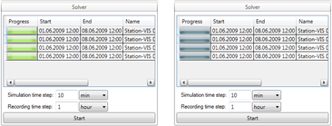
- Click on in the Solver frame if necessary to stop the simulation. All results until that moment are saved.
Scenarios results
After simulation of each scenario, following components are showed:
In the Selection frame: the temporal evolution of the selected object’s series.
In the Comparators frame: the values of indicators checked at the top left of the frame (Indicators to visualize).These values are displayed as graphical and tabular forms and correspond to the comparator selected in the bottom left of the Comparator frame.
During the simulation, you can change all the objects or all indicators or all comparators to visualize by clicking on or checking them. The tabular results of indicators can be exported at all times by copying then pasting the text in a file.
At the end of the scenario simulation, the outputs datasets are available in the same repository than those of the database.
6.3 Stochastic simulation
This tool is capable of generating a set of simulations based on different parameters or initial conditions with values located in a defined user interval. For each element of the model, simulated hydrographs, corresponding statistics (mean, median, quartiles, minimum and maximum values), and related set of parameters for each simulation are provided. This module has implemented 4 types of probability distributions, uniform, normal, log normal and exponential. Also, it is possible to define a custom probability distribution with a txt file, to get more information go to the Technical Manual.
Sometimes the complexity of a hydrological model requires a sensitivity analysis to collect a set of simulations. The possibility to analysis the results of a model depending of a range parameter is really useful to know the variability of the model. This module generates a lot of information, all the results simulations, generated parameter series and finally a statistic results.
In RS MINERVE, an automatic stochastic simulation can be realized in the Hydrological calibration tool (1).
- Click on Expert module and then on the Stochastic Simulation (1).
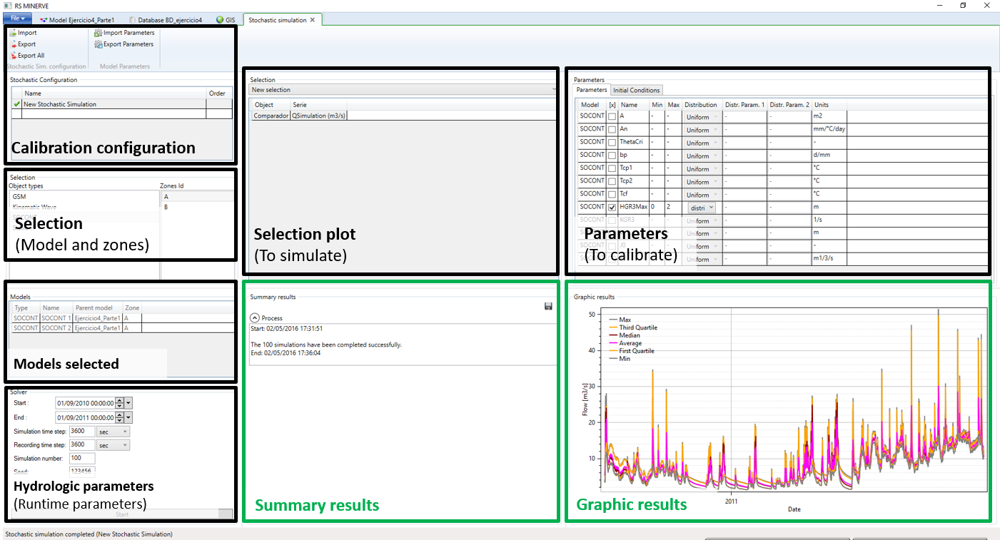
Stochastic configuration
The creation of a new Stochastic simulation configuration can be realized following next steps (corresponding to the black boxes in 1):
- In the Selection frame (1), select the object types to simulate: press simultaneously Ctrl on keyboard and left click on the object types. Then define the corresponding zone(s) by clicking on the Zone Id number(s).
All the objects corresponding to the selected object types and zone(s) appear in the Models frame (1). The correspondent parameters are shown in the Parameters frame (1).
In the Parameters frame (1), select the range parameters to simulate. For each of them, define their minimum and maximum possible values (Min and Max columns) and the probability distribution to be used in the simulation (Uniform, normal, log normal, exponential and user defined). To get more information go to the Technical Manual.
If more than one zone has been selected (Selection frame), a column Values per zone appears in the table. For the parameter(s) selected for simulation, a box appears in this column. If the box is checked, the simulation for the parameter will consider a different value for each zone. If not, the same value will be considered for all zones in the concerned simulation.
Parameters can be imported in the model by clicking on in the Parameters import/export frame (1).
In the Selection plot frame (1), select the result(s) that will be used for the simulation (press simultaneously Ctrl on keyboard and left click on the selection name to select more than one). It is necessary to define previously a plot to run the stochastic simulation.
In the Solver tab of the Hydrologic parameters frame (1), specify the simulation period and both Simulation and Recording time steps.
Click on in the Summary results frame
- to save the current stochastic configuration. If you want to save the configuration for all the simulations click on . The produced file can be imported for the next simulation test.
To import an existing configuration, click on in the Simulation Configuration frame (1) and load the file.
Stochastic start/stop
- Click on in the Hydrologic parameters frame to launch the simulation.
If the simulation configuration is valid, a “Start” message with the current date appears in the Process tab in the Summary Results frame. Otherwise, a red error message is displayed at the bottom of the Solver tab and describes the problem to resolve.
- Click on in the Hydrologic parameters frame to stop the simulation. It takes a moment to stop until the current simulation ends.
Stochastic results
After each simulation during the calibration, the following results are showed in the Summary Results frame (Figure 6.10):
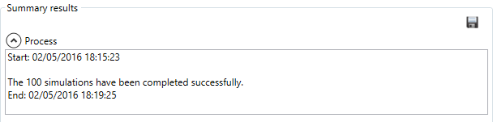
These results can be exported at all times by saving with the Save button .
This action save three CSV files with all the numerical simulation information.
First file, (*.csv) contains all the simulations results for the defined period of time (Figure 6.11, left).
Second file, (* - Statistical.csv) contains the statistical values for simulations results for the defined period of time (Max, Q(75%), Median, Average, Q(25%) and Min) (fig-stochastic_simulation_numerical_results, right).
Third file, (* - P&IC.csv) contains the parameters values with a defined probability distribution (Figure 6.12).
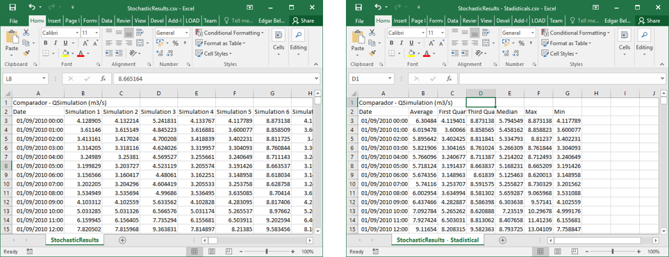
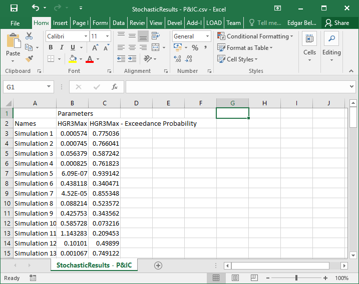
Finally, Figure 6.13 shows the statistical graphical results for the defined period of time.
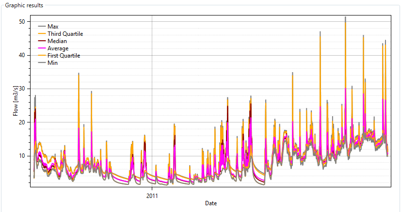
6.4 Time-slice simulation
The computation duration logically increases with the model complexity but also with the simulation period length. Thus, simulations on long periods with short time steps and a complex model can become inappropriate for user’s computer performance. In this case, it is necessary to clip the simulation period in time-slices.
In RS MINERVE, a time-slice simulation can be realized in the Time-slice simulation tool.
- Click on Expert module and then in the Time-slice simulation tool (Figure 6.14).
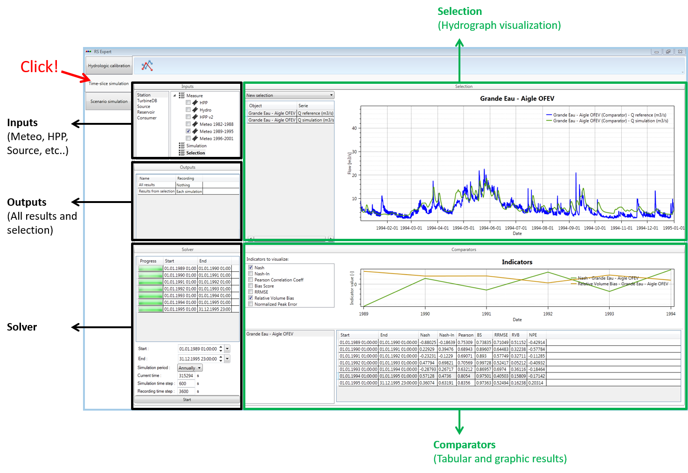
Time-slice configuration
The creation of a new time-slice configuration can be achieved following next steps (corresponding to the black boxes in Figure 6.14):
- In the Inputs frame (Figure 6.14), select the dataset(s) for each data source (Station, TurbineDB, Source, etc.). For example, for the Data Source of Station objects: click on Station, search the corresponding dataset name(s) and check it.
More than one dataset can be checked for each type of input. If a period of the simulation is covered by more than one dataset, the dataset starting first is used
In the Selection frame (Figure 6.14), choose the model selection to be used.
Then, select the object’s series to be displayed.
The model selection is also used for the results exportation.
In the Outputs frame (Figure 6.14), define the outputs to be recorded: All results (all the simulation results of the model) and/or Results from selection (which considers only the above selected model selection). For each one, it is possible to record:
Each simulation: one dataset will be produced by time-slice (see Simulation period in Solver frame at Figure 6.14)
Combined simulations: only one dataset will be produced for all the period
Nothing: no dataset will be produced
In the Solver frame (Figure 6.14), specify:
- The entire simulation period: Start and End dates.
By default, the maximum possible period to be simulated is proposed. It corresponds to the maximum period covered by the datasets in each object type for which at least one dataset is selected. Manual modification can only shrink the extent of the simulation period.
The time-slice or Simulation period: annually, monthly, etc.
Both Simulation and Recording time steps.
Time-slice simulation start/stop
- Click on in the Solver frame to launch the time-slice simulation.
If the model is valid, the simulation starts. In addition, succes of each time-slice is presented with a green progress bar (Figure 6.15, left). If one time-slice cannot be achieved, the RS MINERVE error window is displayed and a gray progress bar is shown (Figure 6.15, right).
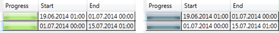
- Click on in the Solver frame if necessary to stop the simulation. All results until that moment are saved.
Time-slice results
After each computation of each time-slice, next components are shown:
In the Solver frame, the progress bar of each time-slice.
In the Selection frame, the series of the components selected in the object list for the last computed time-slice.
In the Comparators frame: the values of the indicators checked under Indicators to visualize for the selected comparators are graphically shown in the top part of the frame and in tabular form in the bottom part of the same frame (Figure 6.16).
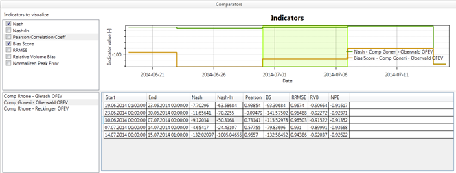
Objects selection in the Selection frame as well as indicators and comparators to consider in the Comparators frame can be modified during the Time-slice simulation.
The tabular results of indicators can be exported at any time by copying them and pasting the text in a file.
At the end of the time-slice simulation, the outputs datasets are available in the same repository than those of the database.
6.5 Optimizator
In RS MINERVE, an automatic optimization of the Planner’s conditions and rules can be performed with the Optimizator tool (Figure 6.17).
- Click on Expert module and then on the Optimizator tool (Figure 6.17).
Optimization configuration
The definition of a new optimization configuration can be carried out following the next steps (corresponding to the black boxes in Figure 6.17):
- In the Selection frame (Figure 6.17), select the Zones to be considered and the Planners objects to which the optimization should be applied to: press Ctrl and click to select multiple Zones or Planners.
Once the Zones and Planner objects selected, all the possible “output generation” parameters and the “conditions” parameters that can be optimized appear in the Parameters to optimize frame (Figure 6.17).
- In the Parameters to optimize frame (Figure 6.17), select the parameters to optimize in both tabs (Output generation and Conditions). For each one, define its minimum and maximum possible values.
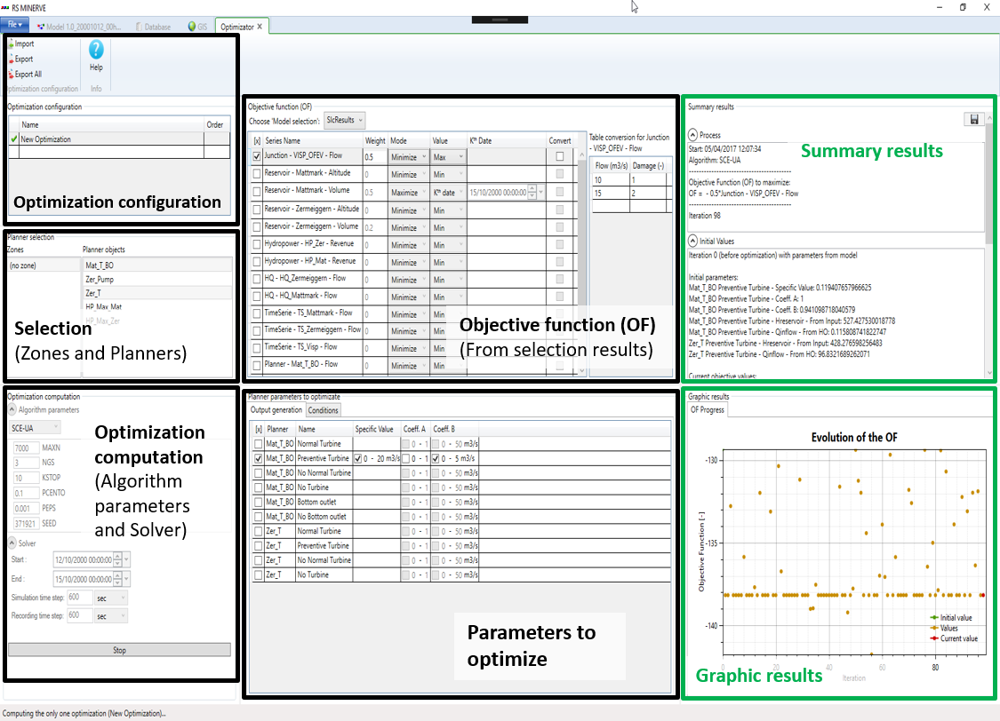
Choose the ‘Model selection’ (from those defined in Selection and plots module) in the Objective Function (OF) frame (Figure 6.17). The available series of this selection appear in the table below.
Select the series to take into account in the objective function. For each selection, specify its weight, the optimization type (maximize or minimize) and the value we want to maximize/minimize (the maximum value of the series, the minimum value, the average or the value for a specific K date).
If the option “Kth date” is selected for the Value to optimize, the user has to define a specific date in the “Kth Date” column.
A conversion from discharge to damages can be applied to the flow series selected. This could be used to optimize damages instead of discharges. For this purpose, the user can create a conversion curve adding at least two points in the “Table conversion” on the right. When the points are added, the Convert option for this result can be enabled.
In the Solver section of the Optimization computation frame, specify the optimization period and both the Simulation and Recording time steps (Figure 6.17).
In the Algorithm parameters section of the same frame, define the optimization algorithm to be used (e.g., SCE-UA in Figure 6.17) and its corresponding parameters. Three different algorithms are available: Shuffled Complex Evolution – University of Arizona - SCE-UA; Uniform Adaptive Monte Carlo – UAMC; Coupled Latin Hypercube with Rosenbrock - CLHR. For more information about their basic essentials, please refer to the RS MINERVE – Technical Manual.
Hover the mouse over each parameter to display a short description.
To save the current optimization configuration (optional), click on in the Optimization Configuration frame (Figure 6.17). If you want to save the configuration for all the optimizations, click on . The resulting file can be imported for the next optimization.
To import an existing optimization, click on in the Optimization Configuration frame (Figure 6.17) and load the file.
Optimization start/stop
- Click on in the Optimization computation frame to launch the optimization.
If the optimization configuration is valid, a “Start” message with the current date appears in the Process tab of the Summary Results frame. Otherwise, a red error message is displayed at the bottom of the Solver section with a description of the problem.
- To stop the process, click on in the Optimization computation frame. It takes a moment to stop until the ongoing simulation ends.
Optimization results
During the optimization running, the following results are displayed in the Summary Results frame (Figure 6.17 and Figure 6.18):
The Objective Function (OF), with its maximum possible value.
The results of the simulation before the optimization with the initial Planner parameters and the initial OF value.
The results of the current iteration with its Planner parameters values and the respective values of the OF value.
The best result, with related parameters and OF value.
The results can be exported for all iterations at the end of the process with the Save button located in the same frame. The summary results can also be copy -pasted the text in a file.
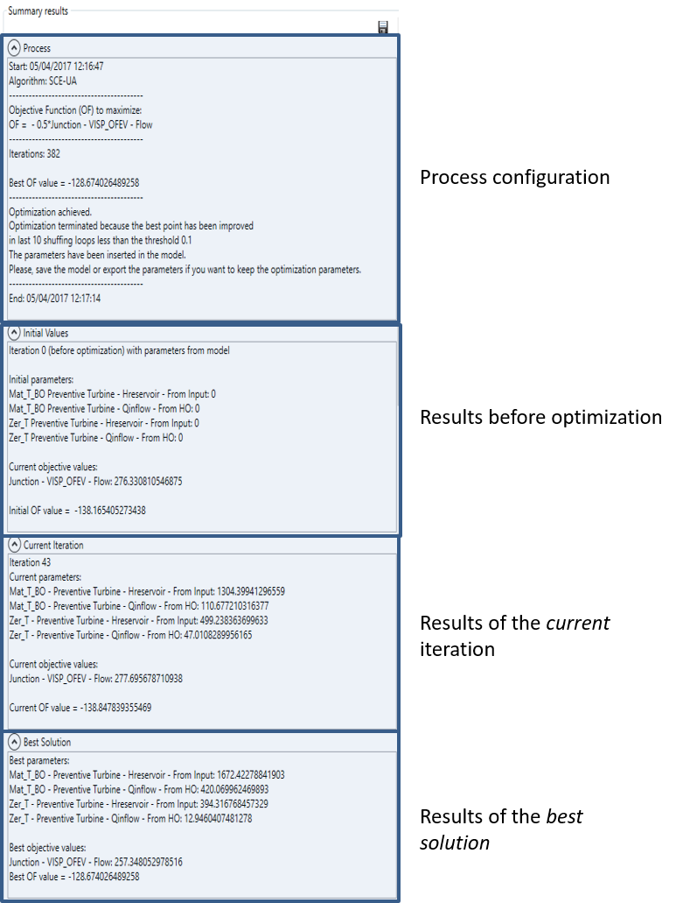
The results of the optimization in progress are also displayed graphically in the Graphic Results frame (Figure 6.17):
- The OF Progress tab shows the evolution of the Objective Function (OF), with its Initial value in green, the current value in red and all other values in orange. The activation of the mouse wheel on the vertical axis allows to zoom on the OF values of interest.
At the end of the optimization:
- The Planner parameters obtained at the end of the optimization process are applied to the model. If the model is saved, the parameters are stored; if not, the Planner objects keep the initial (non-optimized) parameters.